The Hitchhiker's Guide to Full Disk Encryption
Full disk encryption (FDE) protects the contents of the entire drive from unauthorized access. It works by encrypting all the data stored on the disk. It prevents anyone with physical access to the computer or removes the drive from accessing the data without the correct password or encryption key.
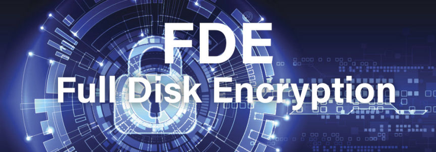
It is important to remember that FDE does not offer protection against malware. It also doesn't protect the data that you send from unauthorized access.
Operating systems come with their own FDE solutions. You can also use third-party encryption software such as VeraCrypt to encrypt your drive.
FDE in Windows Pro, Enterprise, and Education is provided by BitLocker.
To enable it, search "Manage BitLocker" at the search box on the taskbar, select it, turn on BitLocker, and follow the instructions that follow.
Do not store your recovery key in Microsoft Cloud.
Bitlocker makes use of the Trusted Platform Module (TPM). It stores the encryption key at the TPM. This means that when you turn on your computer it starts normally without pre-boot authentication.
If you believe you could face an attacker capable of extracting the key from TPM, you should set up a pre-boot PIN or Password.
To set up the PIN:
Click the Windows button and R at the same time.
Type '"gpedit.msc" and click on enter.
Go to "Computer Configuration" > "Administrative Templates" > "Windows Components" > "BitLocker" > "Operating System Drives".
Double Click on the "Require Additional Authentication at Startup".
Select "Enabled".
Click the "Configure TPM Startup PIN" and choose "Require Startup PIN with TPM"
Click on "OK" to save and Close the Group Policy Editor.
Launch Command Prompt as admin.
Run "manage-bde -protectors -add c: -TPMAndPIN". You will be prompted to enter a PIN.
Enter the PIN, click on Enter, and confirm the PIN.
After this, a Bitlocker Pre-Boot Pin Screen will appear when you reboot your device.
Full disk encryption on macOS is provided by Filevault.
To enable Filevault, go to "System Settings", click on "Privacy & Security" and then turn on FileVault. Remember to store the recovery key offline instead of using your iCloud account.
VeraCrypt is an open-source project based on the discontinued TrueCrypt project. With VeraCrypt, you can encrypt a partition, or encrypt the entire volume with pre-boot authentication.
VeraCrypt has either "Normal" or "Hidden" system encryption. In Normal encryption, the drive is encrypted normally with a single password that you have to enter when you reboot your device.
In Hidden encryption, you are provided with plausible deniability. You get to choose whether to boot a decoy OS or a hidden OS, depending on the password you enter during pre-boot authentication. Plausible deniability works when you are dealing with an adversary who cannot force you to reveal the existence of a hidden OS.
To further protect your data consider taking these measures:
For further security measures give VeraCypt's documentation a look.
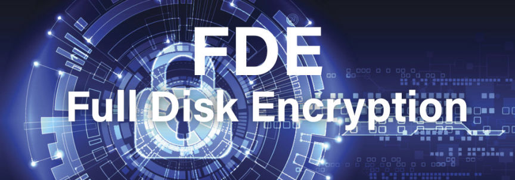
It is important to remember that FDE does not offer protection against malware. It also doesn't protect the data that you send from unauthorized access.
Operating systems come with their own FDE solutions. You can also use third-party encryption software such as VeraCrypt to encrypt your drive.
BitLocker for Windows
FDE in Windows Pro, Enterprise, and Education is provided by BitLocker.
To enable it, search "Manage BitLocker" at the search box on the taskbar, select it, turn on BitLocker, and follow the instructions that follow.
Do not store your recovery key in Microsoft Cloud.
Bitlocker makes use of the Trusted Platform Module (TPM). It stores the encryption key at the TPM. This means that when you turn on your computer it starts normally without pre-boot authentication.
If you believe you could face an attacker capable of extracting the key from TPM, you should set up a pre-boot PIN or Password.
To set up the PIN:
Click the Windows button and R at the same time.
Type '"gpedit.msc" and click on enter.
Go to "Computer Configuration" > "Administrative Templates" > "Windows Components" > "BitLocker" > "Operating System Drives".
Double Click on the "Require Additional Authentication at Startup".
Select "Enabled".
Click the "Configure TPM Startup PIN" and choose "Require Startup PIN with TPM"
Click on "OK" to save and Close the Group Policy Editor.
Launch Command Prompt as admin.
Run "manage-bde -protectors -add c: -TPMAndPIN". You will be prompted to enter a PIN.
Enter the PIN, click on Enter, and confirm the PIN.
After this, a Bitlocker Pre-Boot Pin Screen will appear when you reboot your device.
Full Disk Encryption in macOS
Full disk encryption on macOS is provided by Filevault.
To enable Filevault, go to "System Settings", click on "Privacy & Security" and then turn on FileVault. Remember to store the recovery key offline instead of using your iCloud account.
FDE with VeraCrypt
VeraCrypt is an open-source project based on the discontinued TrueCrypt project. With VeraCrypt, you can encrypt a partition, or encrypt the entire volume with pre-boot authentication.
VeraCrypt has either "Normal" or "Hidden" system encryption. In Normal encryption, the drive is encrypted normally with a single password that you have to enter when you reboot your device.
In Hidden encryption, you are provided with plausible deniability. You get to choose whether to boot a decoy OS or a hidden OS, depending on the password you enter during pre-boot authentication. Plausible deniability works when you are dealing with an adversary who cannot force you to reveal the existence of a hidden OS.
A Step-by-step Guide to Full System Encryption for Windows with VeraCrypt:
- Download and Install VeraCrypt Got here and download VeraCrypt for Windows and install the software once the download completes.
- Begin Encryption Launch the application and go to "System" and select "Encrypt System Partition/Drive"
- Select the Type of Encryption 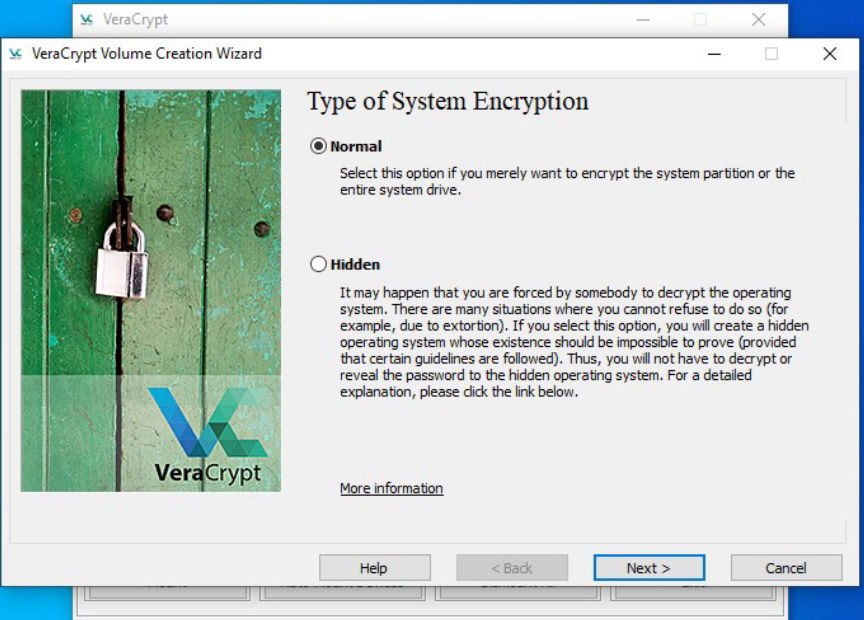
- Select the Area to Encrypt 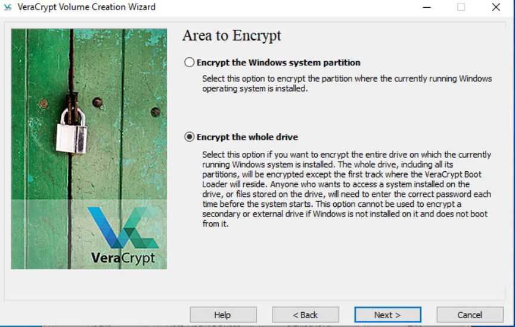
- Host Protected Area Encryption 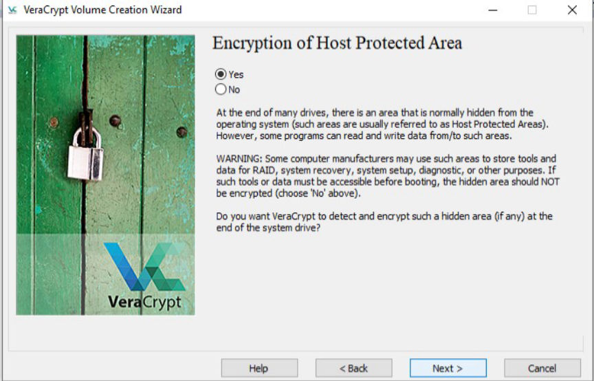
- Set the Number of OSs 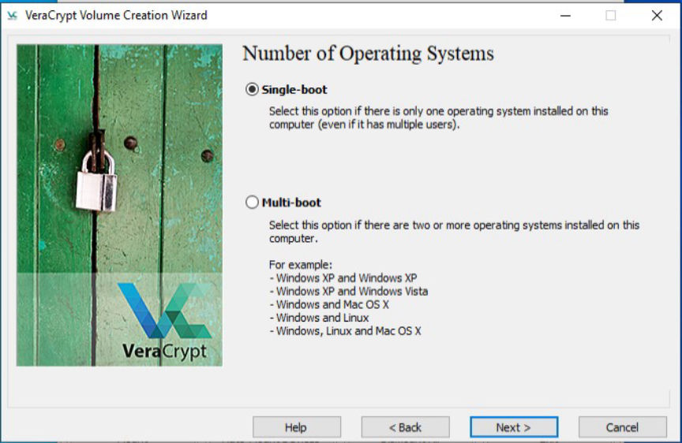
- Encryption Select AES as the encryption algorithm. If you wish to compare the speeds click the test button.
- Set the Password 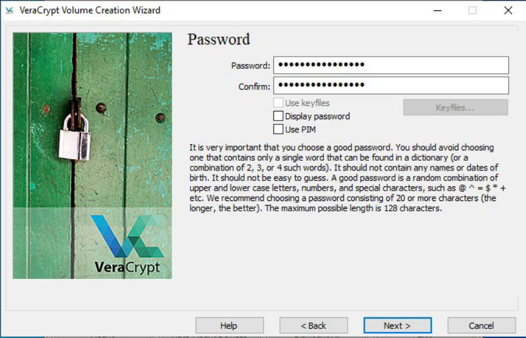
- Key Generation Randomly move your cursor around until the bar is full.
- Set Rescue Disk Make one and store it outside your encrypted drive. A USB drive should work.
- Set Wipe mode Select "None", if you don't have any sensitivity on the device.
- Test your setup For the encryption to go forward, VeraCrypt will reboot your system, test the bootloader, and only encrypt if the test is passed.
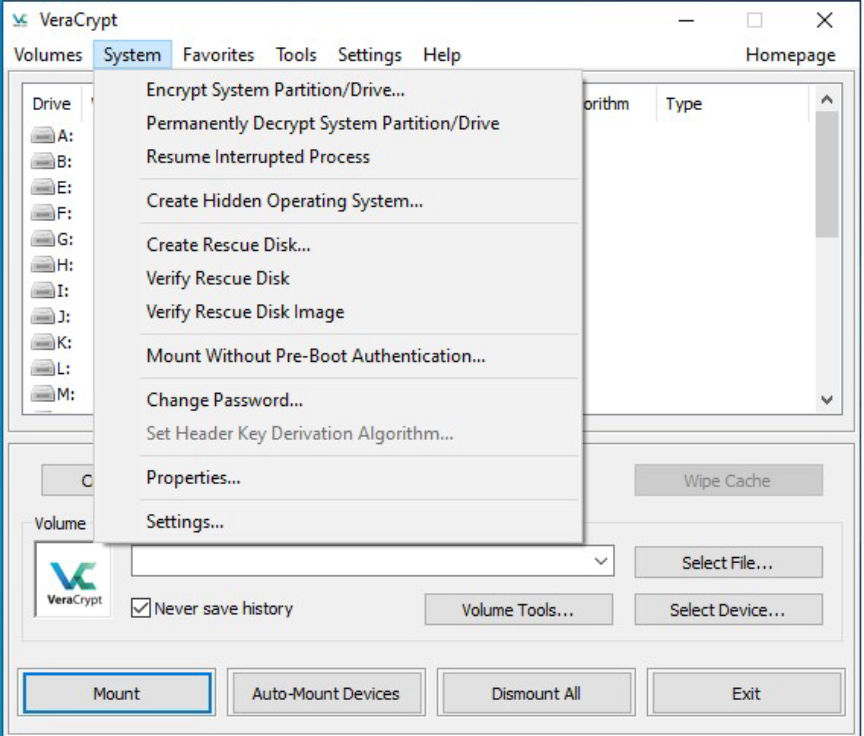
Launch the drive encryption process
Encrypt the drive Normally
Select "Normal" and click on Next.
Encrypt the whole drive
Select the whole drive.
Encrypt the host location
Select whether to encrypt the area or not.
Choose the number of OS
Select "Single-Boot" and click on Next.
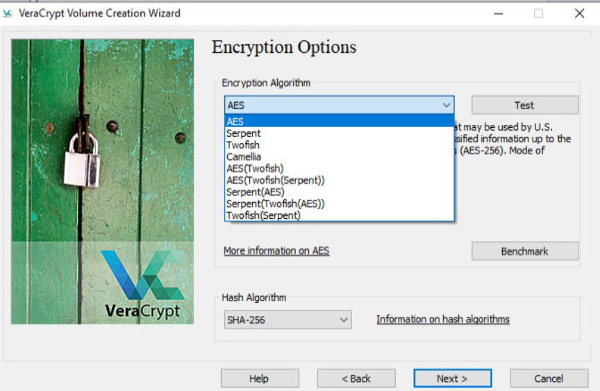
Choose a strong encryption algorithm
Select SHA-512 as the hash Algorithm.
Click on Next.
Set A password
Set a strong and unique password. Click on Next.
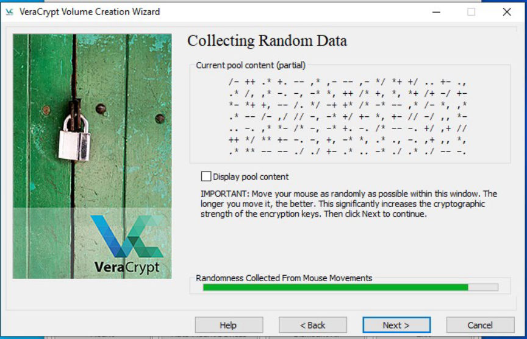
Key Generation Process
Click Next to be directed to the generated keys.
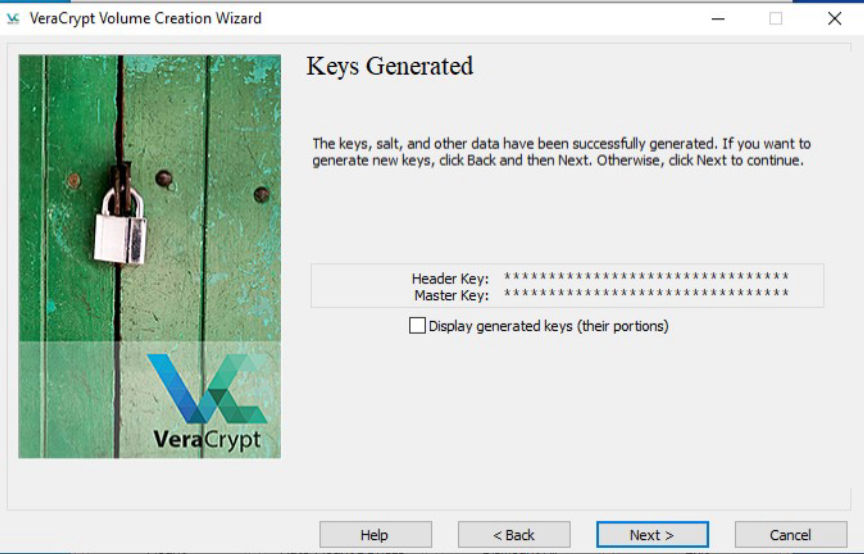
The Encryption Keys Generated
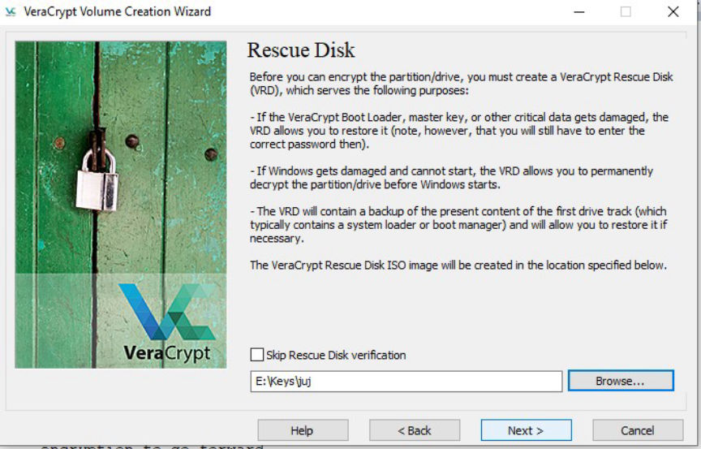
Set up the rescue disk
The rescue disk will not store your password, you will still need it.
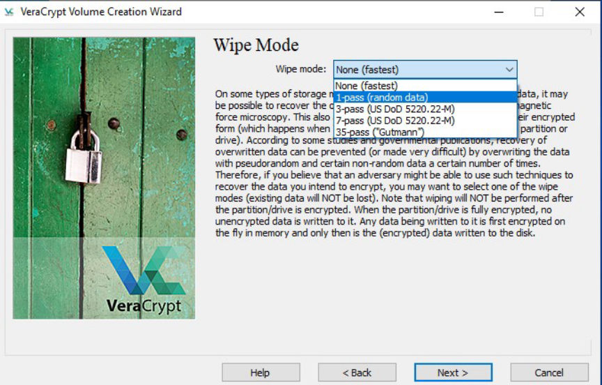
Choose how you would like to wipe your drive
If you have sensitive data on your SSD, Trim alone should work. You can select "1-pass" to be completely confident.
If you have sensitive data on an HDD at least use "1-pass".
Click on "Test" to start the pretest.
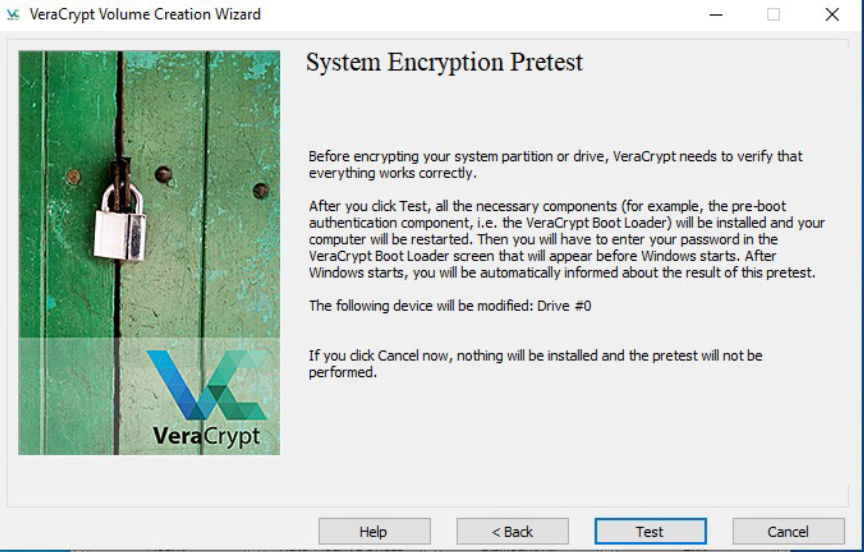
Begin the pretest
If you pass the test, VeraCrypt Boot Loader will open on reboot and prompt you to enter the password you chose.
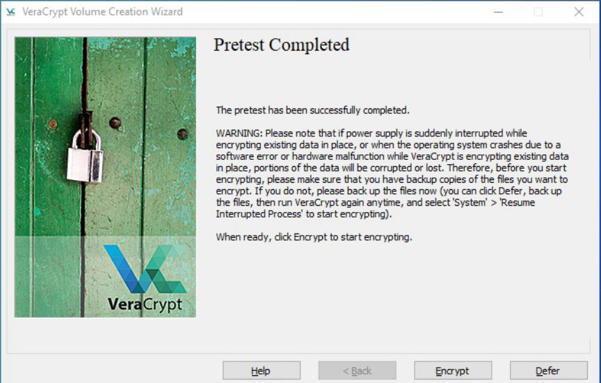
Encrypt the disk after passing the test
After reboot, VeraCrypt will prompt you to start the encryption process.
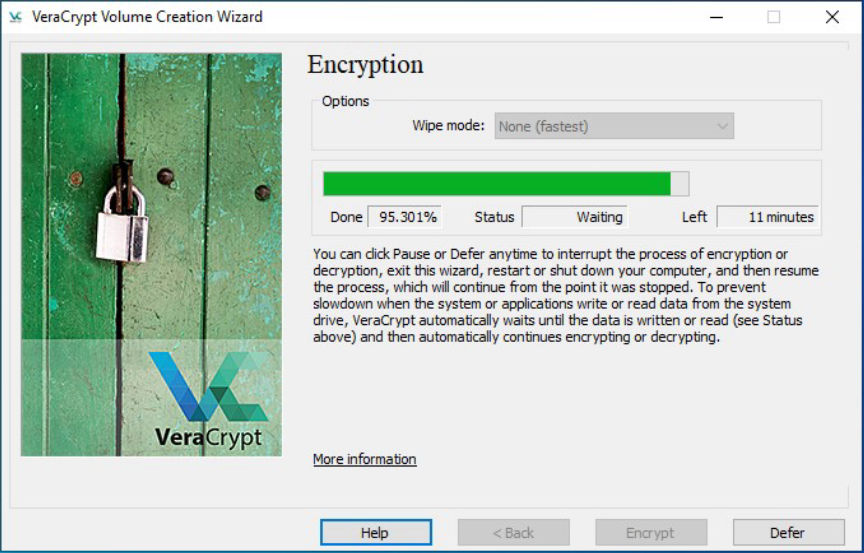
Drive encryption complete
Start the encryption and wait for it to complete.
Additional Security Measures
To further protect your data consider taking these measures:
- Encrypt the memory Go to settings click on "performance/driver options" and select "encrypt RAM".
- Enable VeraCrypt to wipe the keys from memory if a new device is inserted Go to "System" then "Settings" followed by "Security" and click on "clear keys from memory if a new device is inserted".
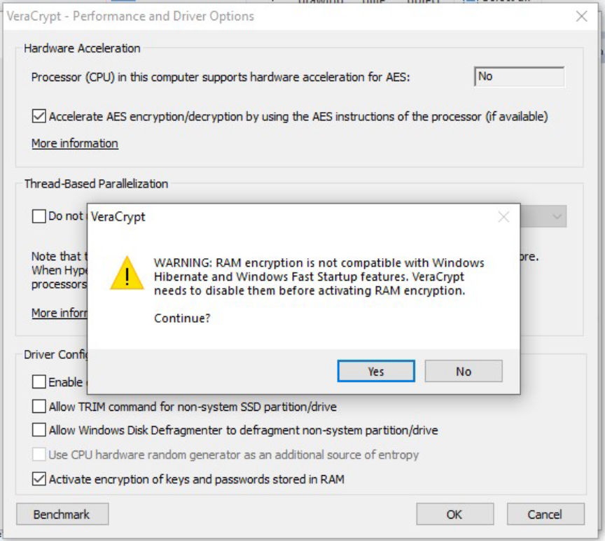
This will reduce the performance by 5 to 15%. This setting will also disable hibernation and encrypt the memory to help stop some cold-boot attacks.
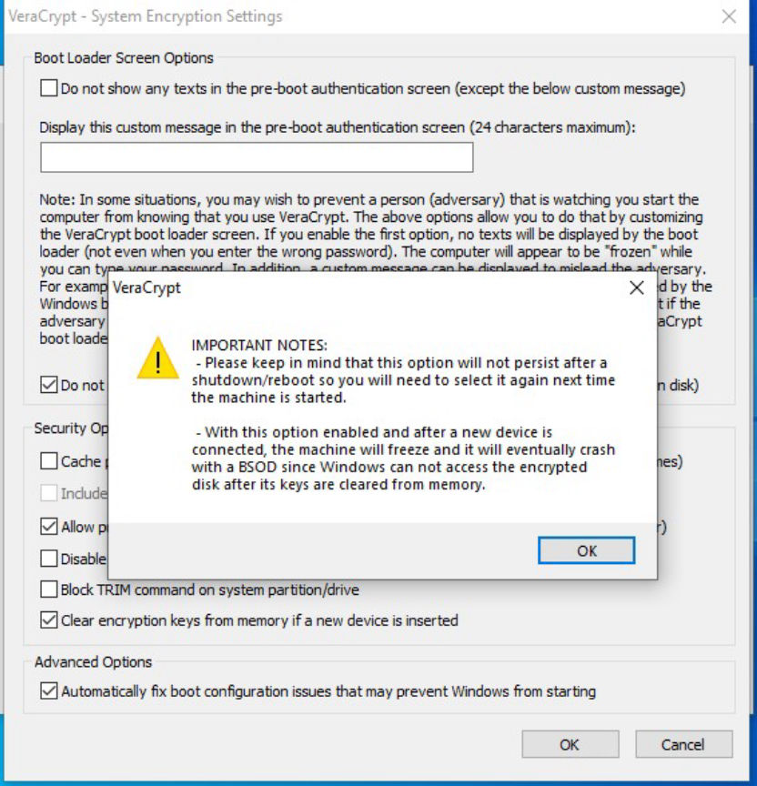
This could help in case your device is seized while it is still on.
For further security measures give VeraCypt's documentation a look.